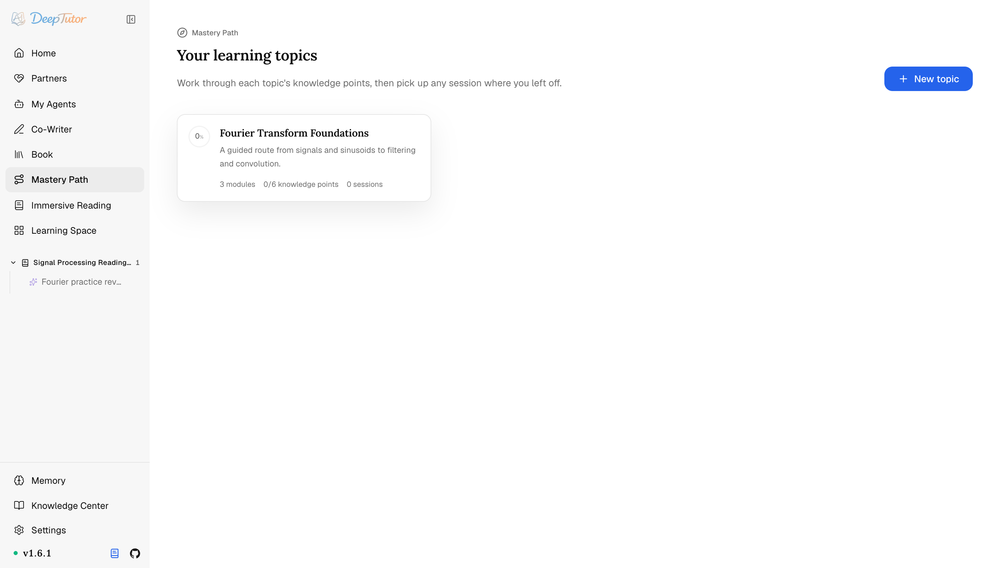
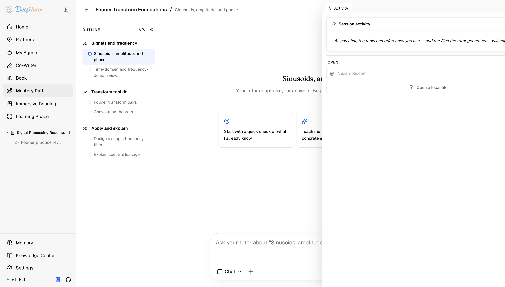

探索 DeepTutor精通之路
沒掌握就不解鎖下一關！DeepTutor 精通之路，4 類知識點配間隔複習，把學習逼成闖關遊戲！
把學習目標和自己的材料變成帶硬門檻的掌握地圖，再由專屬導師陪你逐個攻克路標。
原文連結：https://docs.deeptutor.info/zh-cn/explore/mastery-path/
為什麼你的學習計畫，永遠停在第一章？
相信不少朋友也是透過那個方法在學的：開個聊天視窗，讓 AI 把概念講一遍，當時懂了，過兩週全還給模型。
最近我試了試 DeepTutor 的精通之路（Mastery Path），它把學習目標拆成一條真正能走完的路線：模組加不同型別的知識點，進度看的是你是否真正掌握，不看讀了多久。
關鍵數字先擺出來：建立路徑只要 3 步，知識點分成 4 種型別，而且實行硬門檻：當前目標沒掌握，下一個路標就不開放。
這套「沒過關就不給解鎖」的機制到底怎麼運轉？接下來就來拆解建立、學習和封存這三段機制。
精通之路是什麼
精通之路把寬泛目標拆成一條真正能走完的路線。路線由模組和不同型別的知識點組成，進度看的是你是否真正掌握，而不是讀了多久。
它在哪裡
從左側欄開啟精通之路（或訪問 /mastery）。
主題地圖會顯示每個主題、下一個路標與總體進度。
它現在是頂級產品，學習空間不再重複放置入口卡片。

建立一條路徑，3 步搞定
選擇 New topic，依次完成三步：
1、Goal ——給主題命名，並描述你真正想獲得的能力。
2、Materials ——可選書籍、筆記本或知識庫檔案；目標始終納入。
3、Outline ——編輯模組與知識點；若所選檔案遺漏，可強制重新生成或接受缺口。
每個知識點會標為 memory、procedure、concept 或 design 這 4 種型別之一。
型別決定什麼證據才算掌握，也幫助導師選擇合適的學習活動，這一步不是擺設，後面能不能解鎖就看它。
一次攻克一個路標
專屬學習介面把當前主題、路標、進度環、可摺疊大綱、對話記錄與共用輸入框放在一起。
能力膠囊可把下一輪交給其他相容模式，Activity 抽屜和側邊檢視器則保留工具、引用與生成材料。
它實行硬門檻：當前目標未掌握，下一點就不會開放；已完成的知識點會在到期時透過間隔複習再次出現。

一輪對話結束後，設定好的 Task Model 可以結合當前路標和近期對話，寫出下一條建議問題。
輸入框為空時按 Tab 接受建議；只有你主動傳送，它才會真正進入對話，主動權一直在你手裡。
對話封存在主題下面
學習會話是綁定精通之路的普通對話。
側欄按主題封存；重新開啟會還原地圖和路標。
普通 Chat 也可給出交接卡，繼續或新開會話；僅在你點選後跳轉。
相關閱讀
這套硬門檻加間隔複習的組合，對治「學了就忘」是真能跑起來。使用過程遇到問題，歡迎在留言區留言，把報錯的完整日誌貼出來，我看到會回覆。